2.2 Building a model
Figure 2.10: We need some procedure by which we build a model. In every modelling exercise, there’s this recursive process. What do we know about the process before we collect the data? Then we update with the data and count the ways. Then we step out from the small world to the large world. What could be messing with our inference?

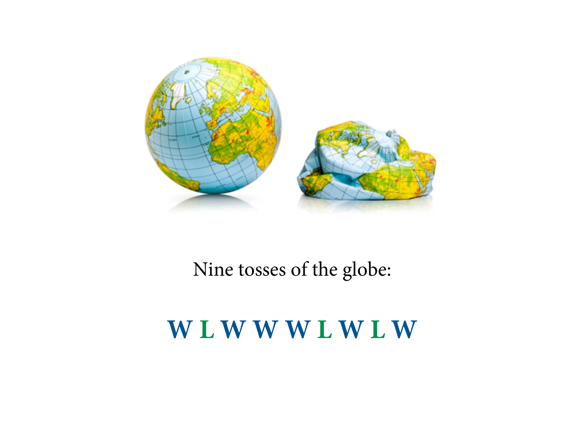
slides_dir = here::here("docs/slides/L02")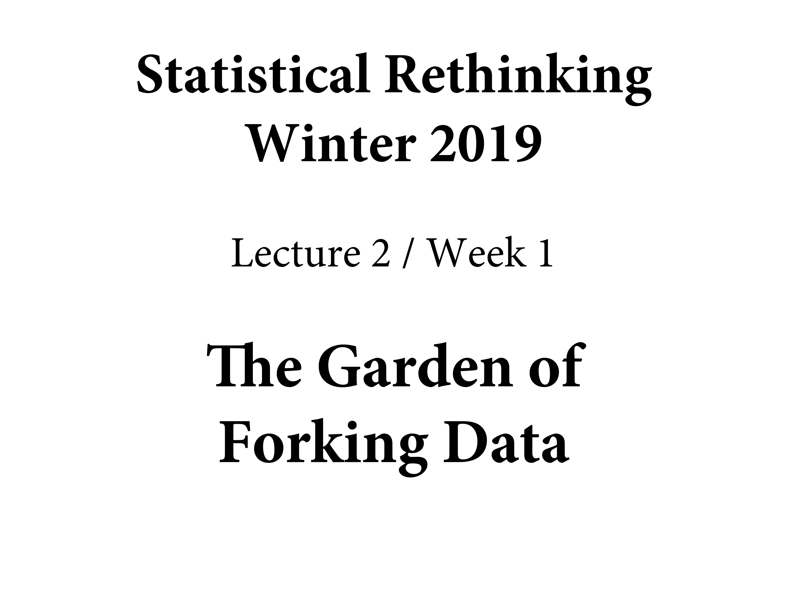
Figure 2.11: The assumptions you build into the model also explain how it learns. It structures experience. No learning without assumptions.
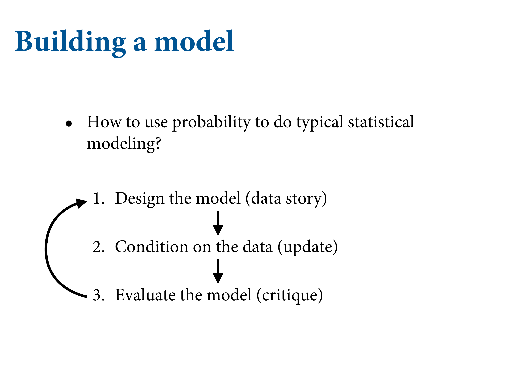Design the model using the scientific background of the data. Add the data and update, then get critical. Never relinquish control to the golem.
Figure 2.12: Let’s go through an example. We would continue this sampling process. Here we can see exactly how the data is generated. We’re throwing the small world around in order to estimate something about the large world.
Figure 2.13: What’s the data story? What do you know about how the data has arisen? We know a lot. We saw it generated. We think there’s no way you can rig the throw. So each throw is random, and the probability your hand lands on water should be proportional to the amount of water on earth.
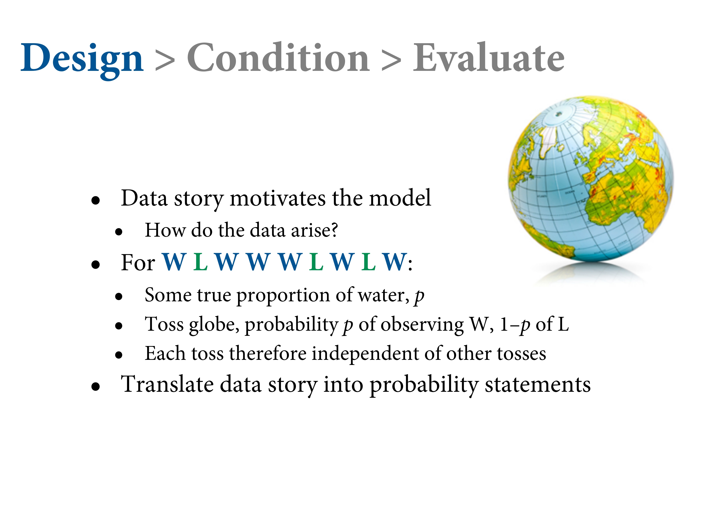It’s a chaotic system. It’s a deterministic physical system, but tiny differences in the initial conditions result in effectively random outcomes.
All the tosses are independent - but this is an assumption, so we should test that.
Figure 2.14: Give you model some initial plausibility about the values of \(p\). Conditioning means slicing off possibilities.
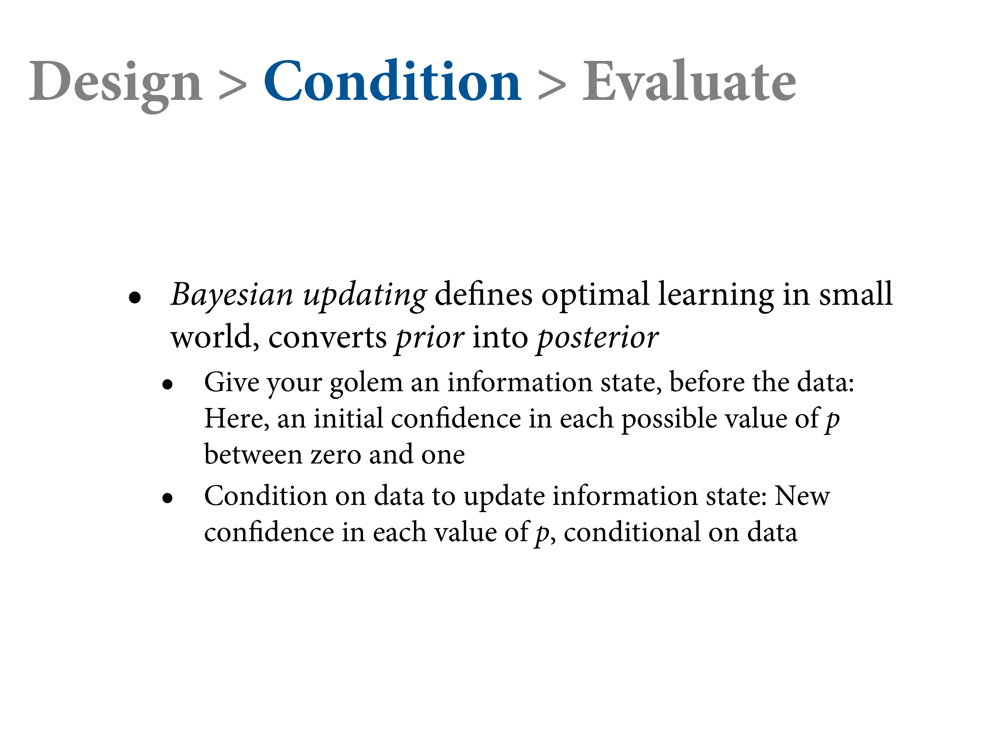Figure 2.15: The prior sets all the possible states it could be in. Then the first data point arrives, and the model will update this. The prior is then transformed into a new distribution. If there’s any relevant information, the model figures it out. Now higer values are more likely, and now that you’ve observed water, “no water” is impossible.
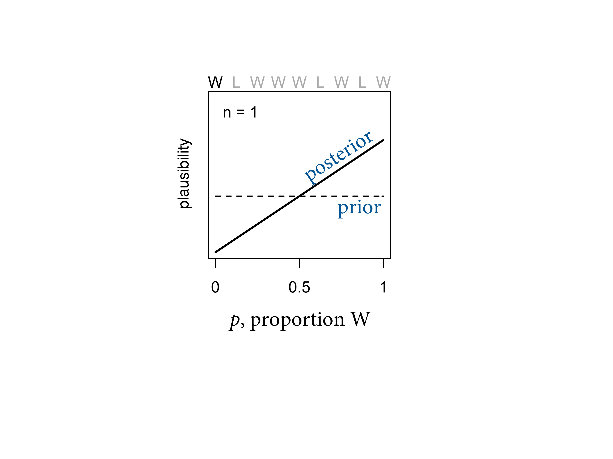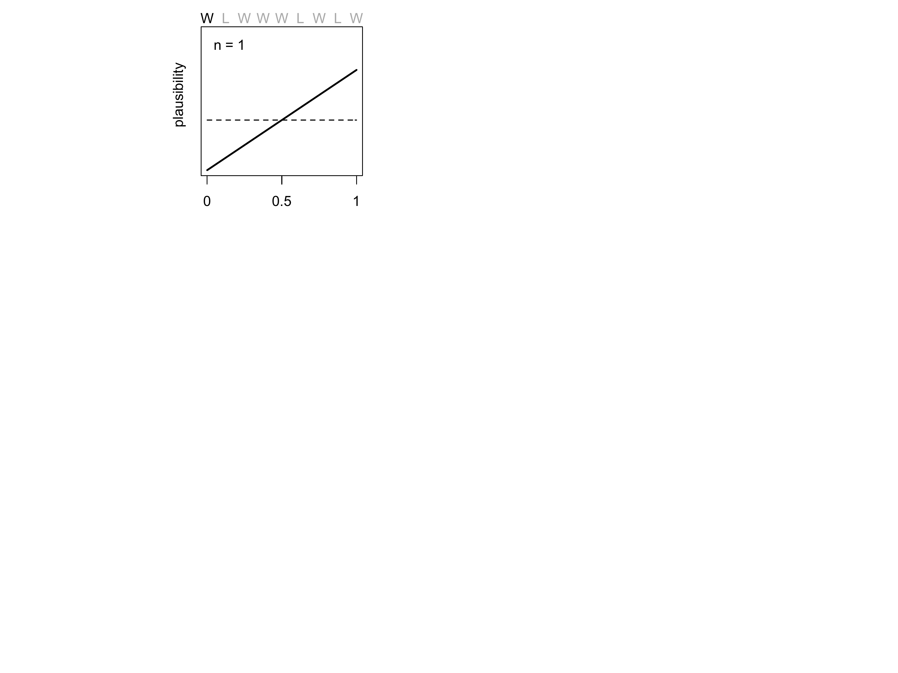
Figure 2.16: Now the second plot includes the second sample. Every posterior is the prior for the next plot. When n = 2, you got land, so “all water” also become impossible.
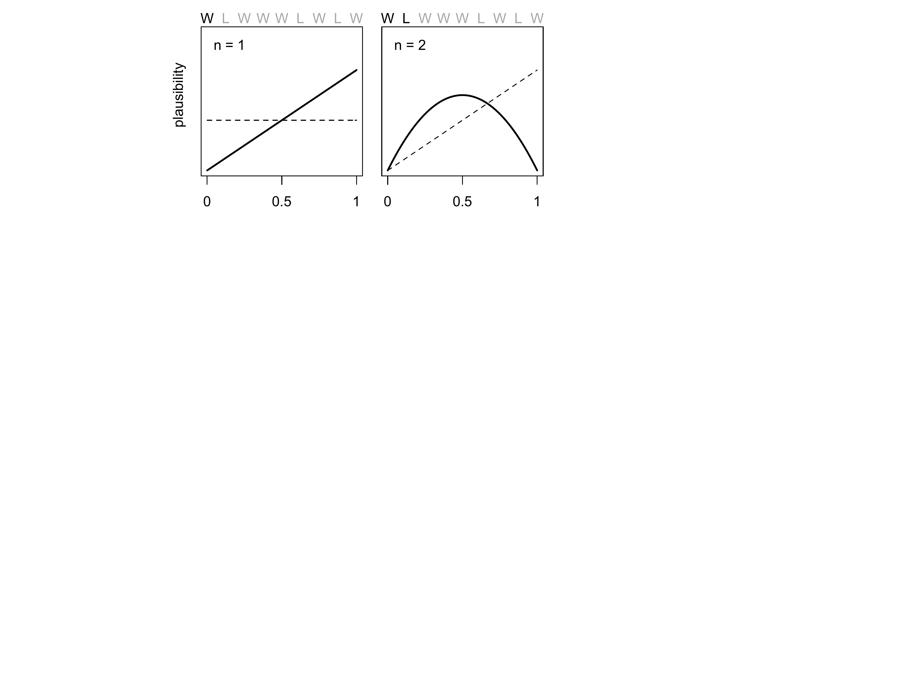Figure 2.17: Note it’s shifting less and less, so each additional data point contributes less marginal information.
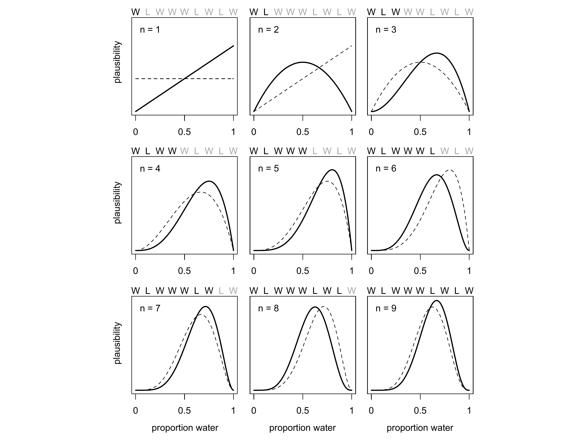Figure 2.18: So this is the conditioning step. We did this one data point at a time, but usually we just throw the whole sample in. But we get the same answer. Like a cat, you can give it all the treats at once, and it’ll get just as fat. For this model, the sequence doesn’t matter, but sometimes it does so you should pay attention to that.
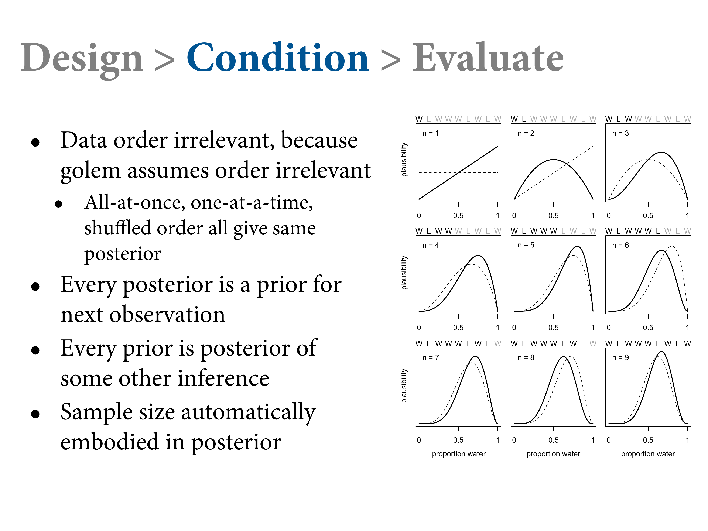The sample size makes it more and more peaked.
Figure 2.19: We want to make an inference about the large world. We need to be critical about. Are there biased throws? We’ll do a lot of posterior prediction checks.
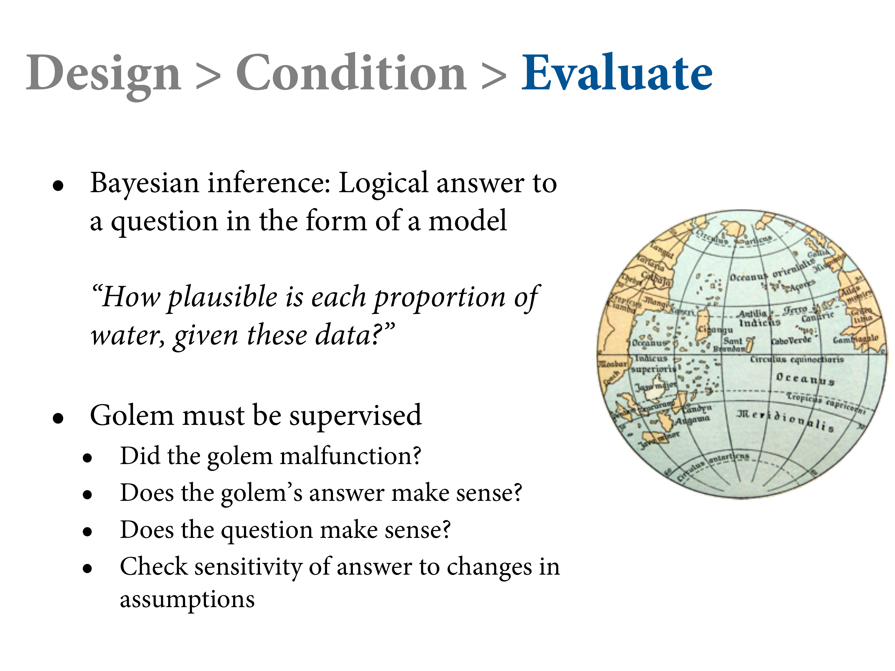